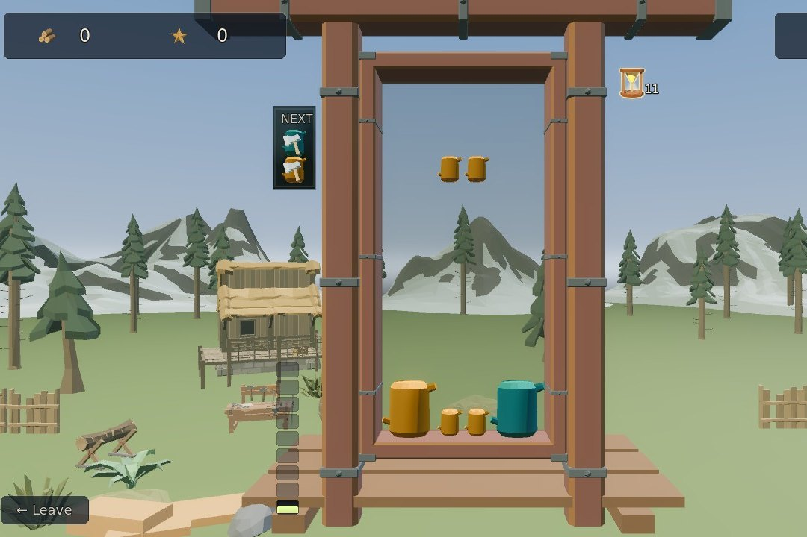
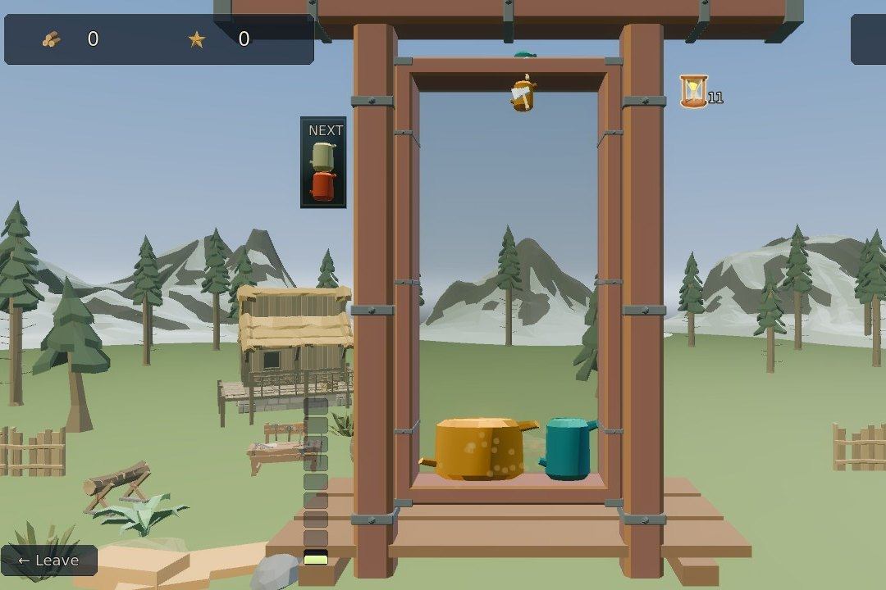
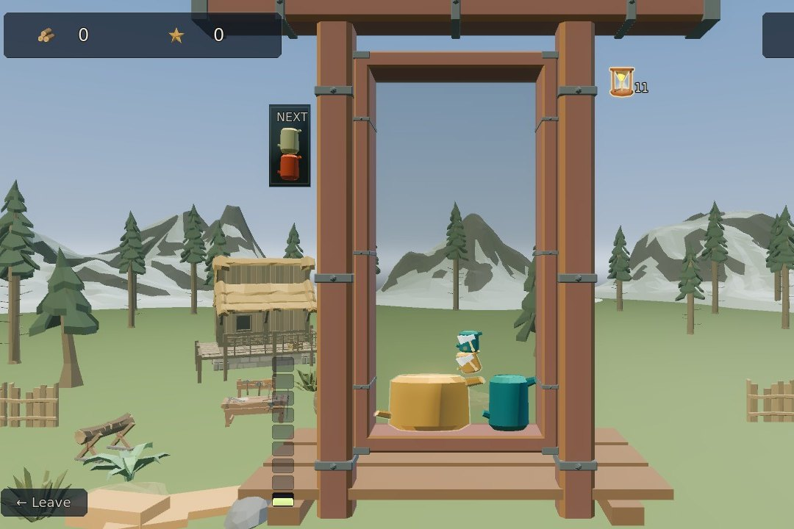
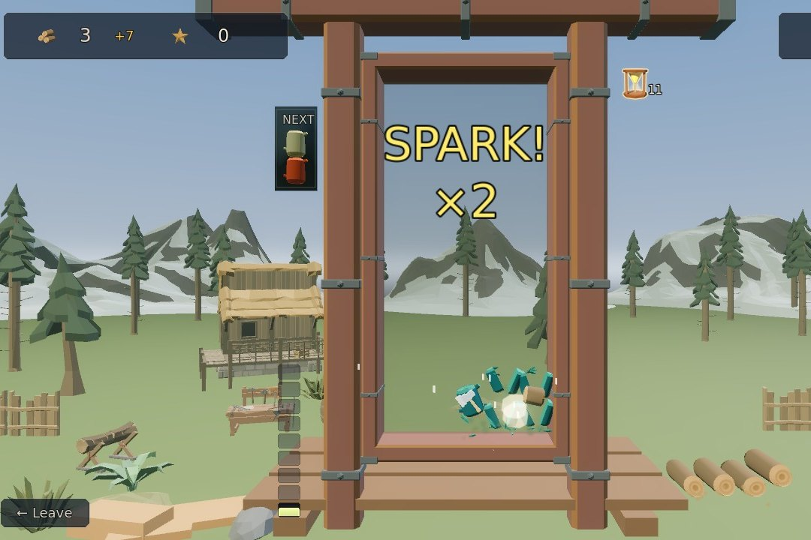
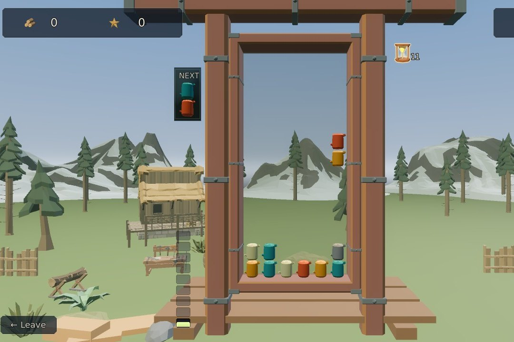
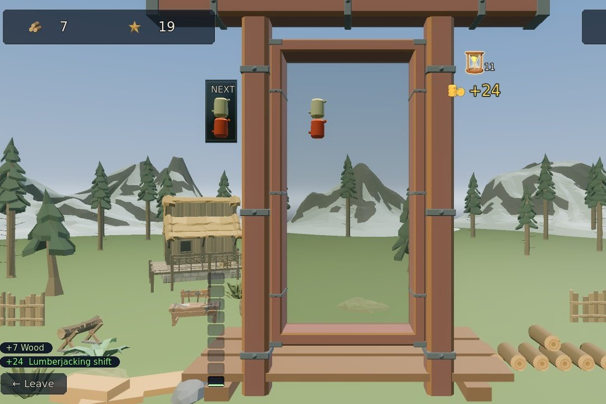

Lumberjacking
Stack the falling pairs of wood into squares of one kind. A square is a slab, and slabs are what pay.
Step by step
-

1The falling pair2Next1The falling pair2Next Step 1Steer the falling pair
Logs fall in pairs. Move them with ← →, rotate with ↑ or Z (C turns the other way), and hold ↓ or Space to drop faster. The box beside the bin shows the pair coming next.
-

1A slab1A slab Step 2Squares, not rows
Pack a 2x2 or bigger square of one wood and it fuses into a slab, here grown four logs wide. Slabs are the only thing that pays wood; a long line of matching logs pays nothing.
-

1A matching axe2The slab it hits1A matching axe2The slab it hits Step 3Bring the axe down
A log with an axe on it is an axe. Land it against a group of its own wood and the whole group shatters, paying out every slab in it.
-

1A chain of two2Wood paid1A chain of two2Wood paid Step 4Chain the shatters
A shatter that sets off another is a chain, and a chain cuts more wood: a Double's slabs pay half again, a Triple's twice over. Here the spruce axe falls on into a spruce slab, and the wood flies out to the pile.
-

1A knot1A knot Step 5Knots rot
A grey log is a knot. It won't clear while it's a knot, but it rots: it warms from grey to amber, and three drops after it lands it turns into a plain log (sometimes an axe), with Knot Seasoned called over the bin.
-

1A shift, paid1A shift, paid Step 6Every shift pays
The hourglass beside the bin holds the shifts left in your day, and each shift pays gold for the score you made in it the moment it ends. Let the pile reach the top and the chute jams: your time at the saw is over, though the shift you were on is still paid.
The rules, as the game tells them
- ← → move the falling pair · ↑ or Z rotate ccw · C rotate cw · ↓ or SPACE drop faster (hold)
- Pack a 2×2 or bigger SQUARE of one wood — that square is a SLAB, and slabs are the only thing that pays wood
- A long line of matching wood pays NOTHING — build squares, not rows
- Land a matching AXE against a group and the whole group SHATTERS, paying out every slab in it
- Chain shatters back-to-back for combo score — and a chain cuts MORE wood: a Double's slabs pay half again, a Triple's twice over
- Every shift (the hourglass) pays gold for the SCORE you made in it, the moment it ends
- A KNOT won't clear while it's a knot — but it ROTS: it warms from grey to amber, and three drops after it lands it turns into a plain log (sometimes an axe)
- Let the pile reach the top and the chute jams — your time at the saw ends (the shift you were on is still paid)
Word for word from the game: in play the same text sits behind the ? on the board, so this page cannot drift from it.